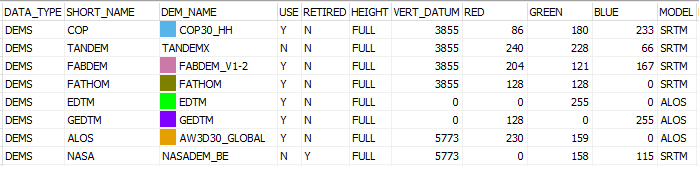

DEMIX
Definitions Databases Setup
DEMIX
Definitions Databases Setup
A number of tables and text files are required in
c:\microdem\demix\ Versions used
for the DEMIX papers will be installed with the program, and can be used as
templates for modifications.
Excel is the easiest way to edit the files. You must save as a
CSV, and then open with MICRODEM to convert to DBF.
Required table, demix_dems.dbf. This should allow
the use of additional DEMs without recompiling the source code.
- Vertical datum, with EPSG code
- Color for display on graphs
- Used (Y/N)
- Short name used for display on graphics and results. It must be 6
or fewer characters, so it can be the base for field names limited by the
dBase standard. If you have DEMs like GEDTM and EDTM, you must put the
more unique one first. MICRODEM idientifies DEMs by going through the
list of USEd DEMs, and takes the first match.
- DEM_NAME is subdirectory in
map library
- HEIGHT, the elevation limit for the DEM

Other tables, installed with progam
- Required table, demix_criteria_fuv.dbf
- Required table, demix_criteria_diff_dist.dbf
- National datums
database in c:\microdem
DEMIX Wine Contest home page
MICRODEM home page
Last revision 5/8/2026